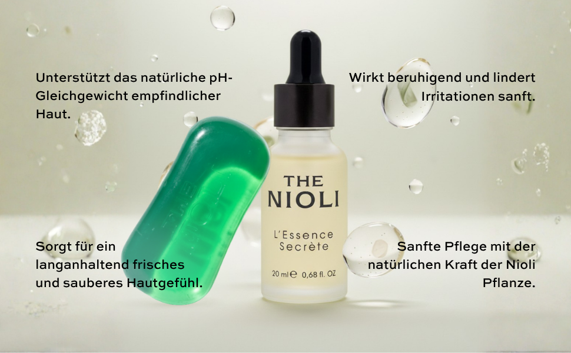
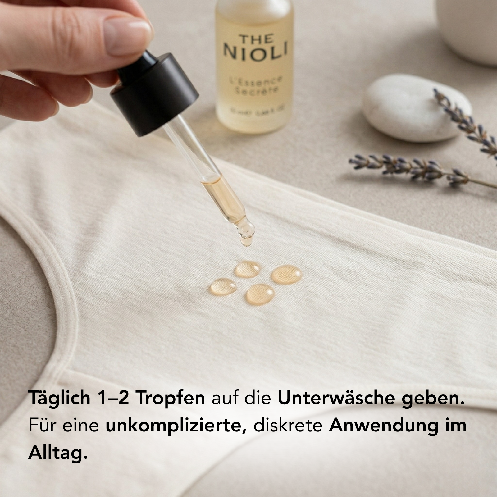

Entdecken Sie L’Essence Secrète: Die Revolution der natürlichen Intimpflege
Wahre Selbstfürsorge beginnt dort, wo wir am empfindlichsten sind. The Nioli – L’Essence Secrète ist nicht einfach nur ein Pflegeprodukt, sondern ein ganzheitliches 2-in-1 Intimpflegeset, das speziell entwickelt wurde, um die sensibelste Hautpartie des Körpers zu schützen, zu beruhigen und im perfekten Gleichgewicht zu halten.
Unser exklusives Set, bestehend aus einer sanften Intimseife und einem hochwirksamen Pflegeöl (20ml), vereint die klärende Kraft des Niaouli-Öls (Melaleuca Quinquenervia) mit intensiv nährendem Jojobaöl. Ob im stressigen Alltag, nach dem Sport, während des Zyklus oder als beruhigende Pflege nach der Haarentfernung – The Nioli schenkt Ihnen 48 Stunden pure Frische und absolute Sicherheit.
Was ist Nioli (Niaouli) und warum ist es so wirkungsvoll?
Das ätherische Öl des Niaouli-Baumes, einem Verwandten des Teebaums aus der Familie der Myrtengewächse, gilt in der Naturheilkunde als wahres Wundermittel. Doch im Gegensatz zu herkömmlichem Teebaumöl, das empfindliche Schleimhäute oft reizen kann, ist Niaouli deutlich milder, hautfreundlicher und hat einen weicheren, angenehmeren Duft.
Die außergewöhnliche Wirksamkeit von Nioli basiert auf seinen natürlichen antibakteriellen, antiviralen und antimykotischen (pilzhemmenden) Eigenschaften. Es schützt die empfindliche Intimflora vor äußeren Einflüssen, beugt bakteriellen Ungleichgewichten vor und neutralisiert unangenehme Gerüche sofort – ganz ohne aggressive Chemikalien oder synthetische Duftstoffe.
Die ganzheitlichen Vorteile für Ihre Intimgesundheit
Schutz der natürlichen Intimflora
Dank der antibakteriellen und antiviralen Eigenschaften von Niaouli wird das natürliche pH-Gleichgewicht unterstützt. Es hilft nachweislich bei der Vorbeugung von wiederkehrenden Infektionen (wie Candida/Hefepilz) und schützt die Hautbarriere.
Linderung bei Juckreiz & Trockenheit
Reichhaltiges Jojobaöl, Arganöl und Vitamin E spenden intensive Feuchtigkeit. Das Set ist eine wohltuende Soforthilfe bei Scheidentrockenheit (z.B. während der Menopause) und lindert Juckreiz sowie Brennen im äußeren Intimbereich sofort.
Perfekte Regeneration nach der Rasur
Rasurbrand, Rötungen und eingewachsene Haare gehören der Vergangenheit an. Wertvolle Pflanzenextrakte wie Centella Asiatica (Tigergras), Echinacea und Calendula fördern die rasche Zellerneuerung und beruhigen gereizte Hautpartien nach der Haarentfernung.

Premium-Inhaltsstoffe aus der Natur
Die Wirksamkeit von L’Essence Secrète liegt in der synergistischen Kombination hochreiner, veganer Pflanzenextrakte:
-
Nioli-Öl (Melaleuca Quinquenervia): Das Herzstück der Formel. Klärend, geruchsneutralisierend und antimikrobiell, schützt es die Intimflora sanft aber effektiv.
-
Jojoba- & Arganöl: Nicht-komedogene Öle, die tief in die Haut einziehen, regenerieren und langanhaltende Geschmeidigkeit verleihen, ohne zu fetten.
-
Tigergras (Centella Asiatica) & Echinacea: Zwei der stärksten natürlichen Wundheiler. Sie wirken entzündungshemmend und beschleunigen die Regeneration winziger Mikroverletzungen (z.B. durch Rasur oder Reibung).
-
Kamille, Rose & Lindenblüte: Ein beruhigender botanischer Komplex, der Irritationen lindert und für ein seidenweiches Hautgefühl.
Das Ritual: Wie Sie das Pflegeset richtig anwenden

Die Anwendung ist denkbar einfach und lässt sich perfekt in Ihre tägliche Hygieneroutine integrieren:
- Schritt 1 – Die Reinigung (Seife): Schäumen Sie eine kleine Menge der pH-hautneutralen Intimseife mit Wasser in den Händen auf. Reinigen Sie den äußeren Intimbereich sanft und spülen Sie die Seife anschließend gründlich mit lauwarmem Wasser ab.
- Schritt 2 – Der Schutz (Nioli-Öl): Geben Sie je nach Bedarf 2 bis 3 Tropfen des L’Essence Secrète Öls direkt auf Ihre Unterwäsche oder Slipeinlage. Das Öl entfaltet seine geruchsneutralisierende und schützende Wirkung über den Tag hinweg. Maximal 2-mal täglich anwenden.
- Tipp nach der Rasur: Sie können 1-2 Tropfen des Öls sanft in die Hände reiben und auf die frisch rasierte, äußere Bikinizone auftragen, um Rasurbrand vorzubeugen.
Sicherheit und Verträglichkeit stehen an erster Stelle
Ihr intimstes Wohlbefinden duldet keine Kompromisse. The Nioli wurde nach strengsten Qualitätsstandards im Bereich der Naturkosmetik entwickelt.
100% Vegan
Rein pflanzliche Wirkstoffe, absolut frei von Tierversuchen (Cruelty-Free).
pH-Hautneutral
Dermatologisch getestet. Ohne Parabene, Sulfate, Alkohol oder synthetische Parfüms.
Gynäkologisch wertvoll
Unterstützt den natürlichen Säureschutzmantel und beugt Irritationen aktiv vor.
Häufig gestellte Fragen (FAQ) zu The Nioli
Was genau ist Nioli-Öl und warum ist es besser als Teebaumöl?
Nioli (Niaouli, Melaleuca Quinquenervia) stammt aus derselben Pflanzenfamilie wie der Teebaum, zeichnet sich jedoch durch eine deutlich mildere, hautfreundlichere Struktur aus. Während Teebaumöl empfindliche Schleimhäute im Intimbereich oft austrocknen oder reizen kann, wirkt Niaouli äußerst sanft, stark antibakteriell und regenerierend – bei gleichzeitig angenehmerem Duft.
Kann The Nioli Pflegeset bei Scheidentrockenheit und Juckreiz helfen?
Ja, absolut. Die Kombination aus pflegendem Jojobaöl, Arganöl, Vitamin E und hautberuhigender Calendula spendet der trockenen Haut tiefgehende Feuchtigkeit. Die entzündungshemmenden Eigenschaften des Niaouli-Öls lindern zudem unangenehmen Juckreiz, Reizungen und Brennen, was besonders während des Zyklus oder in der Menopause sehr wohltuend.
Wie hilft das Set nach der Intimrasur?
Die Haarentfernung stresst die empfindliche Haut enorm und verursacht oft Mikroverletzungen oder Rötungen. Die Seife reinigt diesen Bereich schonend ohne Brennen, während das Öl dank Tigergras (Centella Asiatica) und Echinacea die Wundheilung beschleunigt. Es beugt eingewachsenen Haaren und unangenehmem Rasurbrand effektiv vor.
Wie neutralisiert Nioli-Öl unangenehme Gerüche?
Unangenehme Gerüche im Intimbereich entstehen meist durch ein bakterielles Ungleichgewicht. Anstatt diese Gerüche durch künstliche Parfüms nur zu überdecken, packt Niaouli das Problem an der Wurzel: Seine antimikrobielle Wirkung reguliert die Bakterienflora und sorgt so für langanhaltende, natürliche Frische über bis zu 48 Stunden.
Trage ich das Öl direkt auf die Schleimhäute auf?
Nein, für die tägliche Frische und den Schutz genügt es, 2 bis 3 Tropfen des Öls auf die Unterwäsche oder eine Slipeinlage zu tropfen. Die flüchtigen, ätherischen Bestandteile entfalten ihre Wirkung so den ganzen Tag über schonend. Alternativ können Sie wenige Tropfen auf die äußere, unbehaarte Intimpartie (z.B. Bikinizone nach der Rasur) auftragen. Eine direkte Anwendung im inneren Vaginalbereich wird nicht empfohlen.